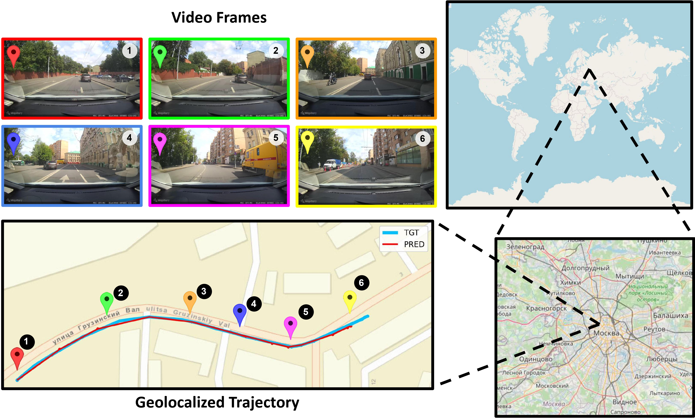
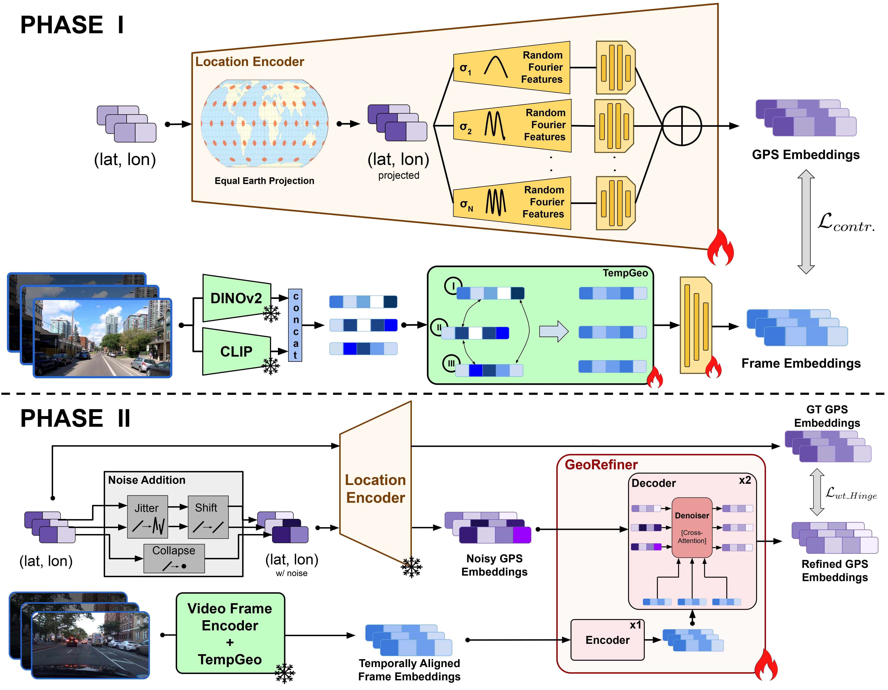
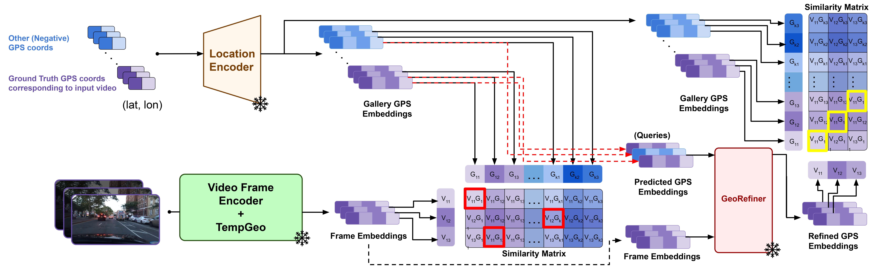
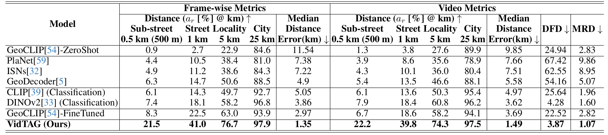
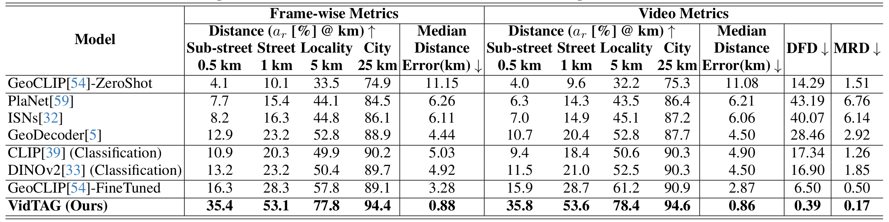
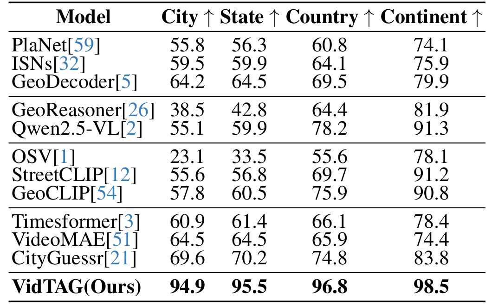

The task of video geolocalization aims to determine the precise GPS coordinates of a video’s origin and map its trajectory; with applications in forensics, social media, and exploration. Existing classification-based approaches operate at a coarse city-level granularity and fail to capture fine-grained details, while image retrieval methods are impractical on a global scale due to the need for extensive image galleries which are infeasible to compile. Comparatively, constructing a gallery of GPS coordinates is straightforward and inexpensive. We propose VidTAG, a dual-encoder framework that performs frame-to-GPS retrieval using both self-supervised and language-aligned features. To address temporal inconsistencies in video predictions, we introduce the TempGeo module, which aligns frame embeddings, and the GeoRefiner module, an encoder-decoder architecture that refines GPS features using the aligned frame embeddings. Evaluations on Mapillary (MSLS) and GAMa datasets demonstrate our model’s ability to generate temporally consistent trajectories and outperform baselines, achieving a 20\% improvement at the 1 km threshold over GeoCLIP. We also beat current State-of-the-Art by 25\% on global coarse grained video geolocalization (CityGuessr68k). Our approach enables fine-grained video geolocalization and lays a strong foundation for future research.


The training of the model is divided in two phases. (a) Phase I training. Each frame is simultaneously passed through DINOv2 and CLIP, and concatenated to generate an embedding. TempGeo module specifically instills positional order in frames of a video and aligns them with other frames, inculcating temporal consistency within frame embeddings. The Video Frame Encoder and TempGeo module are contrastively trained with the Location Encoder. (b) Phase II training. The GeoRefiner module encodes the temporally aligned frame embeddings of a video. Noisy GPS embeddings are input into the decoderalong with the encoded frame embeddings. GPS embeddings are cross-attended with the frame embeddings, which is trained to denoise.

Inference Procedure: Frames are passed through the dual encoders followed by TempGeo to generate frame-wise embeddings, while GPS embeddings are obtained from a gallery of coordinates via the location encoder. The frame-wise embeddings are compared with GPS embeddings to make initial predictions. These predictions, along with corresponding frame embeddings, are refined by the GeoRefiner model, which outputs refined GPS embeddings. A second retrieval with refined embeddings produces final predictions.

Mapillary (MSLS): Table shows results on the MSLS dataset. Our model outperforms the best baseline by a clear margin across all frame-wise and video metrics. In particular, VidTAG improves by roughly 20% over fine-tuned GeoCLIP at the 1 km threshold. DINOv2 (Classification) and GeoCLIP-FineTuned perform well at coarser thresholds (5 km, 25 km), but struggle in the finer regime (0.5 km, 1 km) where our model excels. Trajectory quality is also substantially better, as indicated by lower DFD and MRD, highlighting the effectiveness of TempGeo and GeoRefiner.

GAMa: We next evaluate on the framewise annotated GAMa dataset derived from BDD100k. As shown in the above Table, VidTAG again shows a substantial improvement over fine-tuned GeoCLIP, with an increase of almost 25% at the 1 km threshold. The very low DFD and MRD scores demonstrate that our model produces high-quality trajectories in fine-grained, densely sampled scenarios.

CityGuessr68k: CityGuessr68k is a global video dataset covering 166 cities with hierarchical geographical labels. We adapt it to a city-level GPS retrieval task, where the gallery contains the GPS coordinates of the city centers. We compare VidTAG to image classification, MLLM, CLIP-based, and video classification baselines. As shown in the Table, our model outperforms all previous state-of-the-art approaches by more than 25% at the city level, reaching ~95% accuracy. It also achieves the best performance at state, country, and continent levels, indicating strong generalization to global-scale datasets.